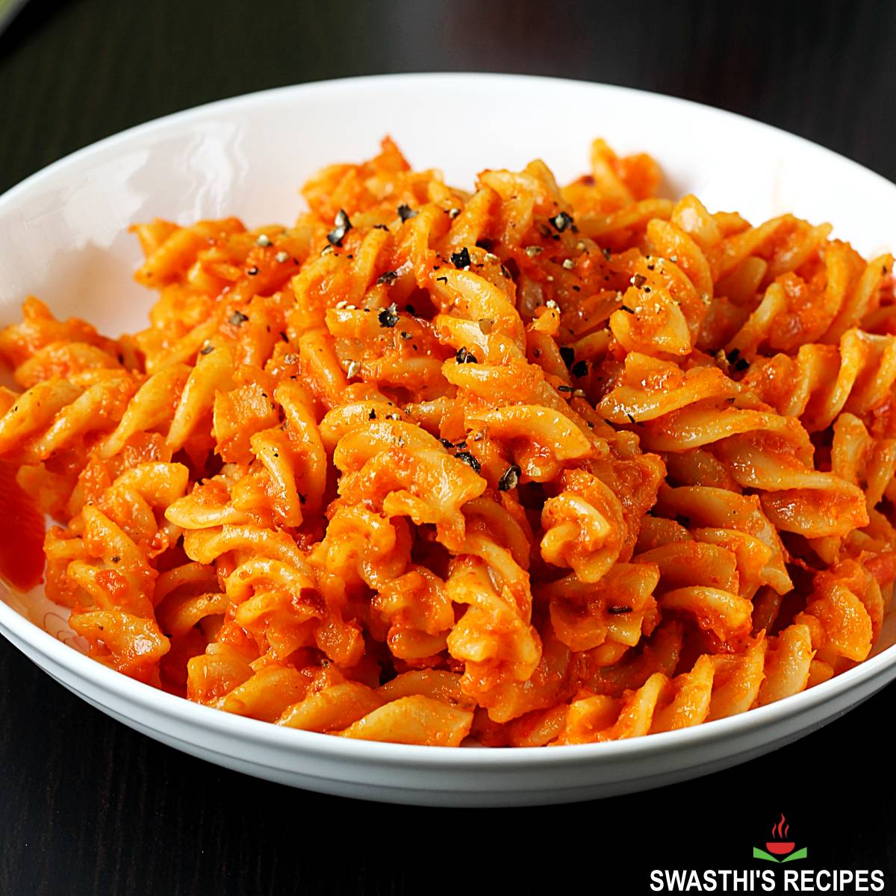

Pasta

Description
Pasta is a versatile and comforting dish made from cooked noodles combined with a flavorful sauce. It can be customized with vegetables, meat, cheese, and herbs, making it a popular meal for lunch or dinner.
Ingredients
- Pasta (such as spaghetti, penne, or fusilli)
- Water
- Salt
- Olive oil or butter
- Pasta sauce (tomato or cream-based)
- Garlic
- Onion
- Parmesan Cheese
- Black Pepper
- Italian seasoning or basil
- Cooked chicken, beef, shrimp, or vegetables
Steps
- Bring a large pot of salted water to a boil.
- Add the pasta and cook according to the package instructions until al dente.
- Drain the pasta, reserving a little pasta water if needed.
- Heat olive oil or butter in a pan over medium heat.
- Add garlic and onion (if using) and cook until fragrant.
- Stir in the pasta sauce and let it simmer for 2–3 minutes.
- Add the cooked pasta to the sauce and toss until evenly coated.
- Mix in cheese, herbs, or other optional ingredients if desired.
- Serve hot, garnished with Parmesan cheese or fresh herbs.
Home